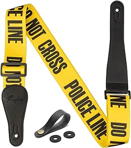

|
 |
 |
 |
 |
 |
|
| Se muestran los tamaños de bombo de 18x22", tom de piso de 14x16", toms de 8x10" y 9x12". La caja, los herrajes y los platillos se venden por separado.
Precio: $16,000 |
Contiene: Cuerpo de aliso,
una pastilla Yosemite single-coil Mustang Bass en el centro; Una pastilla Yosemite single-coil Jazz Bass en el puente; Sistema de tono Greasebucket,
mástil en forma de “C moderna” con diapasón de radio de 9.5 ”; 20 trastes médium jumbo y
clavijero de eje cónico; logo de los 70 plateado
Precio: $30,000 |
Contiene: Pastillas Player Plus Noiseless Jazz Bass/Player Plus Precision, ecualizador activo de tres bandas con alternancia activo/pasivo,
puente HiMass de cuatro caballetes,
diapasón de 12” de radio con bordes redondeado y
moderna forma de cuello en "C"
Precio: $23,000 |
Contiene: Cuerpo de aliso con acabado Blue Marlin,
mástil de arce de una pieza con forma de "C"
pastillas Fender Vintage Noiseless™ Stratocaster de bobina simple y
clavijeros y trémolo sincronizados de estilo vintage
Precio: $28,000 |
Contiene: Cuerpo de aliso,
acabado de barniz Road Worn®,
diapasón de palisandro con un radio de 9,5” (241 mm),
pastillas Mike McCready Custom Strat® de estilo vintage y
puente de estilo vintage con trémolo sincronizado, bloque de acero inoxidable y monturas de acero estampado
Precio: $40,000 |
Esta configuración cuenta con toms montados de 8x10 y 9x12, toms de piso de 12x14 y 14x16, bombo de 18x22 y una caja a juego de 6,5x14.
Precio: $14,000 |
 |
 |
 |
 |
||
| Esta configuración cuenta con un tom montado de 9x12, un tom de piso de 14x16, un bombo de 18x22 y una caja a juego de 6,5x14.
Precio: $18,000 |
Contiene: Sistema de accionamiento del acelerador de doble cadena,
Abrazadera de puntera de tres pivotes,
Bisagra Delta con rodamiento de bolas,
Balancín de resorte de doble cojinete y
Diseño de fundición de poste único
Precio: $12,000 |
Caracteristicas: Púas de coleccionista con dibujos To The Stars,
Contiene 6 púas impresas de calibre medio,
Forma de púa 351 tradicional y
Fabricadas en celuloide
Precio: $1,000 |
Caracteristicas: Amplificador de potencia Clase D de 1000 vatios,
Altavoz de diseño especial de 12",
Controlador de alta frecuencia de dispersión amplia de 1",
EQ activo de 3 bandas con control de corte de alta frecuencia,
Precio: $30,000 |
Caracteristicas: Más de 100 modelos de efectos y amplificadores con calidad Tone Master,
Miles de respuestas de impulso integradas con una variedad de opciones de recinto y micrófono,
Soporte IR de terceros,
Pantalla táctil a color de 7",
Modos innovadores de canción y lista de canciones,
Precio: $25,000 |
Caracteristicas: Largo totalmente ajustable (86,3-150 cm) que se adapta de forma versátil a la mayoría de guitarristas,
Diseño tejido en jacquard y
Fabricada en Canadá
Precio: $1,000 |
|  | |||||
| Esta configuración cuenta con un tom montado de 9x12, un tom de piso de 14x16, un bombo de 18x22 y una caja a juego de 6,5x14.
Precio: $22,000 |
Contiene: Sistema de accionamiento del acelerador de doble cadena,
Abrazadera de puntera de tres pivotes,
Bisagra Delta con rodamiento de bolas,
Balancín de resorte de doble cojinete y
Diseño de fundición de poste único
Precio: $13,000 |
Caracteristicas: Púas de coleccionista con dibujos To The Stars,
Contiene 6 púas impresas de calibre medio,
Forma de púa 351 tradicional y
Fabricadas en celuloide
Precio: $1,000 |
Caracteristicas: Auténtico para modelar de tonos Marshall con calidad de pro FX
Preamplificadores de 14.MST, Potencia de 4.MST amperios, gabinetes de altavoz y 8.MST
Conexión a través de Bluetooth para reproducir música desde tu dispositivo iOS o Android
Precio: $5,800 |
Caracteristicas: Rogue lx200b Series II Guitarra Bass, color azul metálico
Pastilla de cuello de bobina dividida estilo P
Cuello de arce atornillado con diapasón de palisandro
Precio: $3,000 |
Caracteristicas: material tela de poliéster grueso de 2 pulgadas de ancho, duradero que proporciona una experiencia de uso cómoda.
Mide 2 pulgadas de ancho puede evitar que la guitarra se caiga. Y se puede extender de 41 a 67 pulgadas.
Precio: $1,200 |